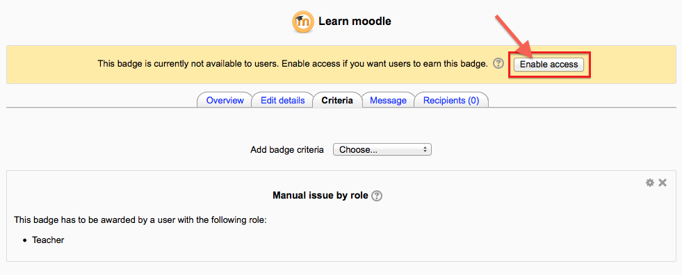

This page is about how to add badges to a course or the site and how users can access their badges.
If course badges have been enabled in Administration > Site administration > Badges > Badges settings then a teacher can add badges from Administration > Course administration > Badges > Add a new badge.
- Badge details - Add a name and description and upload your badge here.
- Issuer details - If you add the teacher name here, it will appear when the badge is displayed. An email address is optional.
- Badge expiry - Set a date here if the badge will cease to be valid after a certain date. Leave it to never if you want the badge to be permanently displayed.
When the settings are saved, you are then taken to the Manage badges screen where you can decide the criteria for awarding the badge.

- For course badges, the criteria are: Manual completion by role; course completion and activity completion.
- When selecting Manual completion by role, you can choose the role you wish to award the badge, so for example a teacher could allow a non-editing teacher to award badges in the course.
- For badges to be awarded for course or activity completion, Completion tracking must be enabled in the site and the course.
- Once criteria have been set, you are returned to the Manage badges screen where you must “enable access” for the badge to be available.
Badges may be awarded manually from Administration > Course administration > Badges > Manage badges > Recipients and clicking the “Award badge” button.
Tip: If your site has a large number of users, it’s easier to search for email addresses than names.
Important Note: Currently once a badge has been issued it cannot be revoked. So make sure that you are giving a badge to the correct users!
- An administrator can add a site badge from Administration > Site administration > Badges > Add a new badge.
- While the settings are basically the same as for a teacher in a course, the criteria are slightly different because of the global nature of the badge. These are: manual issue by role; completing a set of courses or profile completion.
- In order to be able to award a site badge based on completing a set of courses, Completion tracking needs to be enabled in the site and courses.
- Once all criteria are set and badge creator is happy with badge details and settings, site users can start earning it. For users to be able to earn a badge, a badge creator/administrator needs to enable access to this badge on a badge overview page or “Manage badges” page (as shown on the picture).
- Normally badges are awarded to users automatically based on their actions in the system. The completion criteria of an active badge are re-calculated every time an event such as completion of a course or activity, or updating user profile happens. If a user has completed all necessary requirements they are issued a badge and sent an email notification.